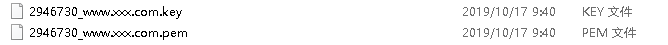
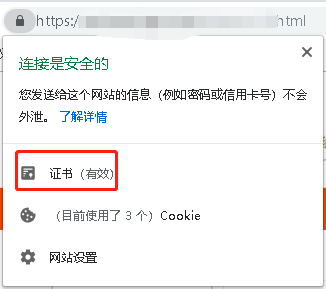

1.下载证书文件

2.在nginx的conf目录中创建目录cert目录，并将证书文件拷贝进去。
3.配置nginx.conf，完整的nginx.conf如下：
#user nobody;
worker_processes 1;
#error_log logs/error.log;
#error_log logs/error.log notice;
#error_log logs/error.log info;
#pid logs/nginx.pid;
events {
worker_connections 1024;
}
http {
include mime.types;
default_type application/octet-stream;
#log_format main '$remote_addr - $remote_user [$time_local] "$request" '
# '$status $body_bytes_sent "$http_referer" '
# '"$http_user_agent" "$http_x_forwarded_for"';
#access_log logs/access.log main;
sendfile on;
#tcp_nopush on;
#keepalive_timeout 0;
keepalive_timeout 65;
#gzip on;
server {
listen 80;
server_name xxx.com;#替换成你的域名
location / {
rewrite ^(.*)$ https://xxx.com/$1 permanent;#替换成你的域名
}
}
server {
listen 443;
server_name xxx.com; # 替换成你的域名
ssl on; #设置为on启用SSL功能。
root html;
index index.html index.htm;
ssl_certificate cert/2946730_www.xxx.com.pem; #替换成你的pem文件名称
ssl_certificate_key cert/2946730_www.xxx.com.key; #替换成你的key文件名称
ssl_session_timeout 5m;
ssl_ciphers ECDHE-RSA-AES128-GCM-SHA256:ECDHE:ECDH:AES:HIGH:!NULL:!aNULL:!MD5:!ADH:!RC4; #使用此加密套件。
ssl_protocols TLSv1 TLSv1.1 TLSv1.2; #使用该协议进行配置。
ssl_prefer_server_ciphers on;
location / {
proxy_pass http://localhost:8080/; #请求转发
}
}
}
4.启动nginx，然后进行访问：

原因是nginx缺少SSL模块，需要重新将SSL模块添加进去，然后再启动nginx：